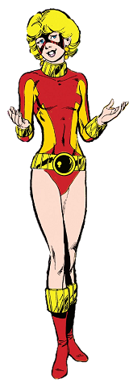

Criação da Terra
Tara Markov, conhecida como Terra, é um personagem dos quadrinhos da DC Comics.
Ela foi criada por Marv Wolfman e George Pérez, fazendo sua primeira aparição
em The New Teen Titans #26, lançado em 1982.
O Personagem Terra
Terra é uma jovem metahumana com a habilidade de manipular e controlar os elementos da terra,
como rochas, solo e minerais. Ela se torna uma aliada dos Jovens Titãs e, ao longo da
história, enfrenta diversos desafios e revelações sobre sua verdadeira natureza.
Terra é retratada como uma personagem complexa e emocionalmente instável. Ela luta para encontrar seu lugar no mundo e lida com conflitos internos, o que a torna um personagem interessante e imprevisível.
Quadrinhos Importantes da Terra
Terra teve várias histórias importantes nos quadrinhos, destacando seu papel nos Jovens Titãs e explorando sua trajetória pessoal. Aqui estão alguns quadrinhos relevantes do personagem:
"The New Teen Titans: The Judas Contract" (1984):
Escrito por Marv Wolfman e ilustrado por George Pérez, esta história é considerada um dos arcos mais icônicos dos Jovens Titãs e destaca a traição de Terra e suas consequências.
"Teen Titans: A Kid's Game" (2004):
Escrito por Geoff Johns e ilustrado por Mike McKone, esta história explora o passado de Terra e sua relação com os Jovens Titãs, revelando segredos e revelações surpreendentes.
Adaptações em Outras Mídias
Terra também apareceu em várias adaptações animadas e live-action, trazendo sua história para além dos quadrinhos. Aqui estão algumas das mais notáveis:
Série animada "Teen Titans" (2003-2006):
Terra é um personagem recorrente nesta série animada, retratando sua história e traição aos Jovens Titãs.
Série animada "Young Justice" (2010-presente):
Terra é um personagem importante nesta série, explorando sua jornada e sua relação com os outros membros da equipe.
Habilidades da Terra
Terra possui poderes relacionados à manipulação e controle dos elementos da terra. Aqui estão algumas de suas principais habilidades:
Geomancia:
Terra pode manipular e controlar a terra, rochas e minerais ao seu redor, moldando-os e movendo-os de acordo com sua vontade.
Terremotos:
Ela pode criar terremotos e tremores, causando instabilidade no solo e afetando o ambiente ao seu redor.
Camuflagem Tectônica:
Terra tem a capacidade de se camuflar e se fundir com o ambiente de terra, tornando-se praticamente invisível aos olhos dos outros.
Conclusão
Terra é uma personagem fascinante e poderosa da DC Comics, conhecida por sua habilidade de controlar os elementos da terra. Sua jornada nos quadrinhos, assim como em outras mídias, é marcada por desafios, traição e autodescoberta. Ela desempenhou um papel importante nos Jovens Titãs, mostrando uma personalidade complexa e uma luta interna constante. Com suas habilidades de geomancia e sua conexão com o elemento terra, Terra se destaca como uma personagem cativante e memorável no universo da DC Comics.